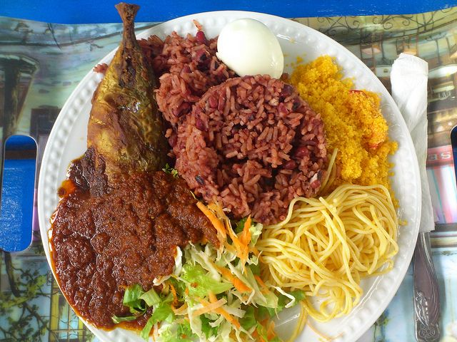

Waakye

A beautiful picture of Waakye, a very popular Ghanaian dish.
Waakye is a very popular Ghanaian dish made of rice cooked with beans. It is widely served as breakfast with a very hot black sauce (shito)
Ingredients
- Beans
- Rice
- Baking Soda
- Coconut Oil
Steps
- Soak the beans overnight.
- The next day wash and drain the beans.
- Cook the beans with the sorghum stems at medium-low in a large pot with 4 cups of water. If you are not using the stems, you can just cook the beans in water
- Make sure to leave a crack when closing the pot so that the water does not boil over onto the stoves
- After about 10 minutes add the baking soda. if you are not using the stems, add about 1 tbsp of baking soda
- Let the beans cook for another 10 minutes. At this point, add in your rice, the rest of the water (2 1/4 cups) and mix evenly
- Let the pot come to a boil.
- Once it has come to a boil, turn the heat to low, cover the pot with aluminium foil and let it cook at low heat for about 30 minutes
- After the 30 minutes has passed, check on the waakye to see how well the rice has cooked. Add in some coconut oil if you like and then cover the pot till the rice is done. Should take another 15-20 minutes.